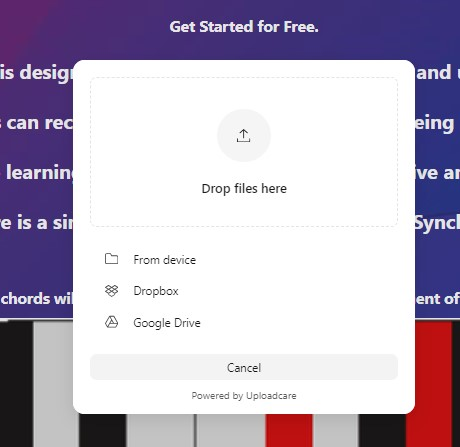
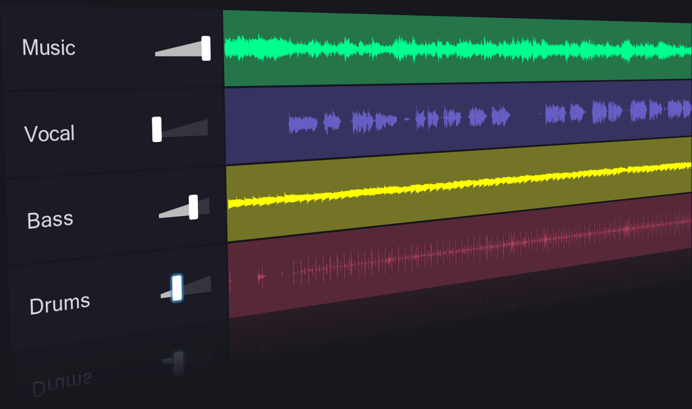

Effortlessly isolate vocals, instruments, and sounds to master the art of music.
Get Started for Free.
Our music note sensing website is designed to help musicians easily identify and understand different musical notes.
By simply uploading a musical score or playing a tune into the website users can receive instant feedback on the notes being played. This tool can be especially useful for music students looking to practice and improve their note recognition skills. With our website learning music theory can be more interactive and engaging making it easier for musicians to hone their craft.
Here is a simple demo of what you can do with Synchronia:
Upload a music/ audio file of your choice.

Allow Synchronia to separate the stems (vocal, bass, drums, etc.) of your audio or music file..

The corresponding notes will then light up simultaneously on your instrument of choice!